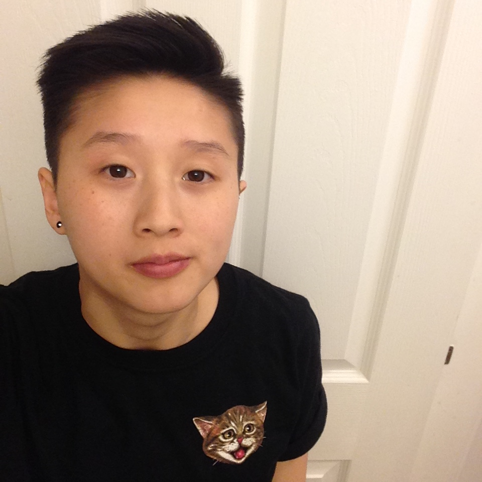

About Me

Hi I'm Katherine but most people call me Kat or "KitKat" if you breakdance with me. I am currently studying web development hoping it will be my future career. During my free time I go to the gym and spend time with my best friends. I am also a caretaker for my grandma at home. My main hobbies involve dancing and choreographing. I used to breakdance back in high school. However, now I just stick to modern hip-hop and R&B.
I have a dog named Snowball. (Technically "Lulu" because my aunt named her before she gave her to us and I hated that name so I changed it). She's a maltese and I love coming home to her everyday. She's such a brat though. Always watching people walk by from the window and barking at them for no reason. She has no manners whatsoever. She is also very mean to other dogs and gets defensive of her territory. And she doesn't like men. She mostly favors females. How ironic. But I still love my bratty dog. I don't care if I'm allergic to her. I'm willing to take the risk and that's real love.